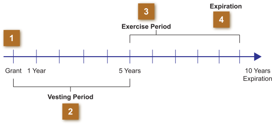

There are several key events associated with stock options. Understanding each of these is critical to your understanding of the various types of stock options that your clients may receive. All executive stock options, regardless of the type, have four key elements.
Click on each of the red numbers to learn more about each event in the life of a compensatory option.
